원자력기사 (2003-05-25 기출문제)
1과목: 원자력기초
1. 고속로의 특성에 관한 설명으로 틀린 것은?
- 열중성자로에 비해 핵연료중의 핵분열성 물질의 분율 즉 농축도가 상당히 크다.
- 핵연료의 연소가 진행됨에 따른 핵분열생성물 축적에 의한 반응도 감소가 열중성자로의 경우보다 서서히 일어난다.
- 급격한 과도상태에서의 운동학적 특성은 열중성자로의 경우와 유사하다.
- 고속로의 경우 4인자 공식(four factor formula)의 적용이 불가하다.
(정답률: 알수없음)

2. 뉴클리어 도플러 효과(nuclear doppler effect)에 관한 설명 중 옳지 않은 것은?
- 중성자 공명흡수율은 도플러효과(doppler effect) 때문에 온도에 의존한다.
- 도플러 효과는 일반적으로 무거운 원자핵으로 구성된 물질에 대해서만 중요하다.
- 도플러 효과때문에 고리원자로(PWR)에서는 온도가 증가하면 중성자의 흡수율은 증가한다.
- 도플러 효과는 중성자의 산란율에는 아무 영향을 주지 않는다.
(정답률: 알수없음)
3. 고속로에서 중성자 흡수봉에 의한 중성자속의 조절은 큰 효과를 얻지 못한다. 그 이유를 설명한 것중 틀린 것은?
- 중성자 수송거리가 길어지기 때문이다.
- 중성자 흡수체의 흡수 단면적이 상대적으로 적어지기 때문이다.
- 중성자속 분포가 경화(hardening)되기 때문이다.
- 중성자 속의 중요성(importance)이 줄기 때문이다.
(정답률: 알수없음)
4. 어떤 핵연료봉 표면온도는 650℉이고, 그 때 열속은 q″= 3.6×105Btu/h.ft2이다. 열전달계수가 7,500Btu/h.ft2.℉일 때 냉각수의 온도는?
- 698℉
- 650℉
- 602℉
- 170℉
(정답률: 알수없음)
5. 하전입자가 기체중에 한개의 이온쌍을 형성하는데 드는 에너지(W값)는?
- 30 – 40eV
- 40 - 50eV
- 50 – 60eV
- 180 - 200eV
(정답률: 알수없음)
6. 열 중성자속이 1012n/㎝2.sec이고, 우라늄의 Σa = 0.3602㎝-1일 때 이 우라늄에 대한 흡수율은?
- 36.02×1010abs/㎝3.sec
- 36.02×1015abs/㎝3.sec
- 36.02×1020abs/㎝3.sec
- 36.02×1025abs/㎝3.sec
(정답률: 알수없음)
7. 다음 γ선중 핵 근처에서 쌍생성(pair production of ele ctron-positron)을 할 수 있는 것은?
- 0.1MeV γ선
- 0.3MeV γ선
- 0.51MeV γ선
- 1.1MeV γ선
(정답률: 알수없음)
8. 2㎿로 운전하는 원자로가 있다. 순수한 U235만을 연료로 사용할 경우 연료 연소율은?
- 2.7×1021g/day
- 5.4×1021g/day
- 2.1g/day
- 2.8g/day
(정답률: 알수없음)
9. 원자로 보호계통의 출력감시에 사용되는 계통은?
- 노심 계측
- 노외 핵 계측
- 노심 및 노외 핵 계측 병형
- 위 가와 나 두 계통 모두 무관한 다른 계통
(정답률: 알수없음)
10. 수소원자의 양자화에서 주양자수가 2일 때 궤도전자가 차지할 수 있는 상태수는?
- 2
- 4
- 6
- 8
(정답률: 알수없음)
11. 1eV의 중성자에 대한 탄소의 산란단면적이 4.8b이다. 중성자의 확산계수(㎝)는? (단, 탄소의 원자밀도는 0.08023×1024이고, 흡수단면적은 무시할 만큼 적다.)
- 0.01
- 0.18
- 0.92
- 0.09
(정답률: 알수없음)
12. 노심계측 계통에 사용되는 계측기가 아닌 것은?
- Fission chamber
- 온도측정 열전대
- 이동식 중성자 측정기
- G-M Counter
(정답률: 알수없음)
13. 핵분열이 일어날 때 약 200MeV의 에너지가 생성된다. 이 생성되는 에너지에 가장 크게 기여하는 에너지 형태는?
- 핵분열 생성물의 운동에너지
- 핵분열 생성물의 γ-붕괴에너지
- 핵분열 생성물의 β-붕괴에너지
- 속발 중성자 및 γ-운동에너지
(정답률: 알수없음)
14. 속중성자 핵분열 인자(Fast fission factor)를 정확히 정의한 것은? (단, Ff : 속중성자에 의한 핵분열율, Fth : 열중성자에 의한 핵분열율)
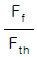
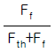
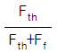
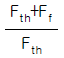
(정답률: 알수없음)
15. 다음 핵 중 탄성 충돌에 있어 lethargy의 평균 변화, ξ가 1인 핵은?
- 우라늄-235(235U)
- 산소-16(16O)
- 수소-1(1H)
- 탄소-12(12C)
(정답률: 알수없음)
16. 냉각재 상실사고시 임계유동(Critical flow)해석에 의해 알수 있는 변수는?
- 핵비등 이탈율
- 최대 배출량(Blowdown Rate)
- 최대노심 압력강하
- 최대 급수량(Reflood rate)
(정답률: 알수없음)
17. 원자력 발전소의 발생에너지 중에서 전기생산소요량 외의 나머지 에너지의 최종적 Sink는?
- 일차냉각수
- 증기발생기 주급수
- 응축기 순환수
- 중간 열교환기
(정답률: 알수없음)
18. 어떤 매질내에서 점중성자원으로 부터 나온 중성자속분포는
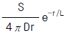
이라고 하면, 이 매질에서의 중성자가 흡수되는 평균 제곱거리를 구하면? (단, 여기서 흡수단면적은 Σa이며, L2는 확산면적이다.)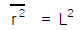
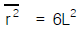
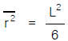
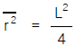
(정답률: 알수없음)
19. 2차 계통내의 예열기를 여러 단계로 나누어 부착하는 이유는?
- 이상 cycle화하여 효율증대를 위해서
- 안전을 위해서
- 소규모로 제작이 편리하기 때문에
- 기술적으로 쉽기 때문에
(정답률: 알수없음)
20. 원자력발전소의 수명이 끝나서 방사선에 오염된 부품을 제거하여 영구저장소에 보내려 한다. 이러한 작업은 방사선 오염물질을 취급하는 것이기 때문에 상당히 많은 경비가 소요된다. 이와 같은 작업시 비등경수로(BWR)의 부품 중에서 가압경수로(PWR)에 비해 더 많은 경비를 지불해야 할 부품은?
- 터빈
- 원자로
- 가압기
- 증기발생기
(정답률: 알수없음)
2과목: 핵재료공학 및 핵연료관리
21. 고속증식로의 일차계통 냉각수로 Li보다 Na을 사용한다. Na 이 Li보다 우수한 특성을 설명한 것중 틀린 것은?
- 융점이 낮다.
- 열전도도가 높다.
- 유도방사능이 적다.
- 점도가 낮다.
(정답률: 알수없음)
22. 어느 방사선원에서 80㎝ 떨어진 곳의 dose rate가 100mR/h일 때 10㎝ 떨어진 곳의 dose rate는?
- 460mR/h
- 640mR/h
- 4600mR/h
- 6400mR/h
(정답률: 알수없음)
23. 다음 중 원자로에서 사용되는 상용우라늄 세라믹 연료의 성형가공법은?
- 분말을 가압성형후 소결하여 펠렛트라고 하는 원통형으로 만들어 사용하는 방법
- 피복관에 분말을 충진하여 진동시켜서 밀도를 높이는 진동충진법
- 피복관에 분말을 충진하여 관외로부터 돌리면서 다지는 스웨이징(swaging)법
- 분말을 가압 성형후 소석회를 사용하여 다지는 고화촉진법
(정답률: 알수없음)
24. 일반적인 응력부식균열의 발생에 대한 설명으로 틀린 것은?
- 응력부식은 주로 합금에서 발생하며 순수 금속에서는 불순물의 영향에 의해 일어난다.
- 응력부식균열을 일으키는 환경은 그 합금의 특유한 것이다.
- 감수성은 열처리에 의한 조직변화에 의하여 영향을 받는다.
- 음극분극에 의하여 오히려 촉진되고 양극분극에 의해서는 효과적으로 방지된다.
(정답률: 알수없음)
25. 방사성추적자로 사용하는데 일반적으로 요구되는 필요조건이 아닌 것은?
- 「동위원소 효과」가 있을 것
- 「방사선 효과」가 없을 것
- 「동위원소 교환반응」이 일어나지 말 것
- 「동위원소 효과」가 없을 것
(정답률: 알수없음)
26. 스텐레스강이 고속중성자 조사를 받음에 따라 나타나는 미세구조의 변화가 아닌 것은?
- 검은점 구조
- 전위 루프 형성
- 탄화물 석출
- 결정립 크기 증대
(정답률: 알수없음)
27. 3개의 지르칼로이-2 시편이 아래와 같이 서로 다른 과정을 거쳐 만들어졌다. 
각 시편의 항복강도(MPa)를 측정하였을 때 그 크기가 맞게 배열되어 있는 것은?
- A ＜ B ＜ C
- C ＜ B ＜ A
- B ＜ A ＜ C
- C ＜ A ＜ B
(정답률: 알수없음)
28. 1mg의 32P는 몇 큐리(Ci)의 방사능을 내는가? (단, 32P의 반감기는 14.3이다.)
- 285
- 572
- 143
- 352
(정답률: 알수없음)
29. 방사선 물질은 가스흐름의 추적자로 사용될 수 있다. 다음 설명중 가장 적당치 않은 것은?
- 대기오염, 화학반응기의 체재시간 분석에 사용된다.
- 접촉하는 물질과 화학반응을 일으키지 말아야 한다.
- 운동학적 점도가 비슷하여야 한다.
- 공기 흐름의 추적자로는 산소의 동위원소를 사용한다
(정답률: 알수없음)
30. 다음 핵연료에 관련된 설명 중 틀린 것은?
- 지지격자 주위의 피복관은 산화가 잘 안된다.
- 1500℃ 이하에서는 소결체(pellet) 결정립의 성장은 잘 안일어난다.
- 이산화우라늄 핵연료에서 Cs은 주로 금속으로 존재한다.
- I은 기화가 잘되어 주로 온도가 낮은 곳으로 이동한다.
(정답률: 알수없음)
31. 다음 중 방사선의 농업 이용에 해당되지 않는 것은?
- 발아방지
- 방사선 살균
- 품종개량
- 투과촬영법
(정답률: 알수없음)
32. 147Pm R.I Battery의 최고 출력은 Pmax = 23.5(?)이다. (?) 안에 들어갈 알맞은 단위는?
- Amp/h
- Amp/min
- μW/㎝2
- W/㎝3
(정답률: 알수없음)
33. 다음 중 UO2 핵연료 제조 공정이 아닌 것은?
- AUC공정
- ADU공정
- IDR공정
- PUREX공정
(정답률: 알수없음)
34. 핵연료의 이상적인 조건이 아닌 것은?
- 열전도도가 낮을 것
- 핵분열성 원자의 밀도가 높을 것
- 화학적 안정성이 높을 것
- 중성자 조사에 대한 변형이 일어나지 않을 것
(정답률: 알수없음)
35. 다음 중 원자번호가 큰 중금속이나 반대로 아주 낮은 원자번호를 갖는 물질의 투과촬영에 유효한 방법은?
- γ선 radiography
- 중성자 radiography
- β선 radiography
- X선 radiography
(정답률: 알수없음)
36. 방사선을 이용코자할 때 방사능의 량에 따라 취급방법이 달라진다. 다음 중 방사선이용시 방사능량의 결정에 관계가 없는 것은?
- 비방사능
- 반감기
- 계측효율
- 핵반응
(정답률: 알수없음)
37. 저출력의 간단한 원자력 전지에서 가장 흔히 사용하는 에너지원의 종류는 어떤 것인가?
- γ 선
- 분열파편(fission fragment)
- α 선
- β 선
(정답률: 알수없음)
38. 25Ci의 Ir-192로 2인치 철판의 시험품을 Film농도가 2.0인 사진을 얻으려고 선원과 Film간의 거리를 15인치로 할 때 노출시간은 얼마로 하여야 하는가? (단, 노출인자는 0.96이다.)
- 1.60분
- 2.88분
- 5.35분
- 8.64분
(정답률: 알수없음)
39. 감속재 중 ξ = 1인 값을 갖는 물질은?
- 수소
- 산소
- 탄소
- 물
(정답률: 알수없음)
40. 점 감마선원에서 일정한 거리를 두고 방사선계측을 하고 있다. 이 선원의 차폐를 위해 두께 5㎝의 물질을 선원과 계측기 사이에 두었더니 계측된 값이 1/4로 줄었다. 이 차폐체의 감마선 흡수계수는 몇 ㎝-1이겠는가? (단, 공기의 감마선 흡수는 무시할 수 있고, 산란에 의한 증감계수는 1로 본다.)
- 0.28
- 0.42
- 0.55
- 0.69
(정답률: 알수없음)
3과목: 발전로계통공학
41. 황화코발트 공침법으로 해수의 전베타방사능을 측정하고자 할 때 공침되지 않는 방사성 핵종은?
- Zr
- Zn
- Co
- K
(정답률: 알수없음)
42. 핵연료 재처리 때에 질산에 용해된 우라늄의 원자가(valence)로 맞는 것은? (단, 우라늄은 과량의 산소 존재하에 질산에 용해되어 우라늄 산화물의 질산염이 됨)
- + 2
- + 4
- + 6
- + 3
(정답률: 알수없음)
43. 다음 중 방사성 붕괴 및 성장 과정에서 평형이 일어나지 않는 조건은? (단, λ1과 λ2는 각각 어미 및 딸 동위원소의 붕괴 상수이다.)
- λ1 ≪ λ2
- λ1 ＜ λ2
- λ1 ＞ λ2
- λ1 ≈ λ2
(정답률: 알수없음)
44. Secular equilibrium에 도달했을 때 모원소와 자원소간의 관계는?
- λ1N1 = λ2N2
- (t1/2,1)N1 = (t1/2,2)N2
- N1/λ1 = N2/λ2
- λ1λ2 = N1N2
(정답률: 알수없음)
45. He4의 Binding energy(MeV)는? (단, He4 = 4.002604amu, 1H1 = 1.0078252amu, n1 = 1.0086652amu)
- 7
- 5
- 28
- 15
(정답률: 알수없음)
46. 우라늄금속을 제조하는 방법으로 맞는 것은?
- UF4를 마그네슘으로 환원시킨다.
- UO3를 수소로 환원시킨다.
- UO2를 HF와 반응시킨다.
- UF4를 수증기로 가수분해한다.
(정답률: 알수없음)
47. 핵분열 생성물인 루테늄-106의 성질은?
- 루테늄은 양성물질이다.
- 루테늄은 단순화합물을 만든다.
- 루테늄 산화물(RuO4)은 휘발성이 있다.
- 루테늄은 용매 추출공정에서 제거가 잘되는 핵분열 생성물이다.
(정답률: 알수없음)
48. 싸이클로트론에서 양자빔(beam)을 조사하여 방사성동위원소를 생산할 때에 흔히 표적물질을 냉각할 목적으로 순수한 냉각수를 흘려 준다. 냉각수에 양자빔의 일부가 흡수되었다면 어떤 방사성 핵종이 생기겠는가? (단, 물에는 18O가 0.2% 함유되어 있다.)
- 18N
- 7Be
- 18F
- 11C
(정답률: 알수없음)
49. 동일한 질량수를 가진 1차 핵분열 생성물에 대하여 독립 생성도를 알고 있으면, 이들은 가우스 분포를 따르게 된다. P(z)는 총 연쇄 생성도에 비례하는 원자번호 z의 독립 생성도이고, zp는 분포에 있어서 첨두에 해당되는 z의 값이고, C는 상수라고 가정할 때 핵분열 생성물의 가우스분포를 맞게 나타낸 것은?
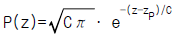
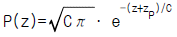
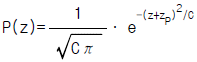
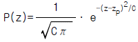
(정답률: 알수없음)
50. Hg2+, Bi2+, Pb2+ 의 미량을 공침시키는데 적당한 carrier는?
- AgOH
- MnO2
- CuS
- BaSO4
(정답률: 알수없음)
51. 핵분열성 물질의 취급에서 다음중 핵임계안전성에 영향을 주는 주요인자가 아닌 것은?
- 취급량
- 용액중 핵분열성 물질의 농도
- 용액을 담은 용기의 기하학적 형태
- 용액의 온도
(정답률: 알수없음)
52. 경수로 핵연료 과정중 재변환(reconversion)과 관계가 없는 것은?
- AUC[(NH4)4UO2(CO3)3]법
- ADU[(NH4)2U2O7]법
- Redox법
- IDR(Integrated dry Route)법
(정답률: 알수없음)
53. 반감기가 15시간인 어떤 방사성 핵종이 있다. 붕괴 시간이 45시간이면 이 핵종의 붕괴인자(decay factor)는 얼마인가?
- 0.125
- 0.250
- 0.500
- 0.750
(정답률: 알수없음)
54. 사용 후 핵연료의 재처리 공정중에서 용매로 아래의 것을 사용하는 방법은?
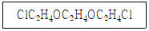
- Redox Process
- Trigly Process
- Butex Process
- Thorex Process
(정답률: 알수없음)
55. 67Ga의 무담체 분리에 있어 [Zn(d,n)]Zn의 타겟을 HCl에 용해하여 산성도를 6N로 하여 용매추출법을 사용할 때 쓰이는 용매는?
- 에칠에텔
- 4염화탄소
- 디치죤
- 알콜
(정답률: 알수없음)
56. 다음 중 지금까지 알려진 원소에 대해 잘못 설명한 것은?
- 원자번호 92번까지는 자연계에 존재하나 그 이상은 인공적으로 만든 것이다.
- 원자번호 84 이상, Po 이상의 원소는 모두 방사성 원소이다.
- 4개의 붕괴계열중 세가지는 Pb에서, 한가지는 Bi에서 최종적으로 안정된다.
- 방사성 원소가 붕괴할 때는 외계의 조건에 영향을 받지 않고 온도만의 영향을 받는다.
(정답률: 알수없음)
57. 방사성 추적자를 이용하는 다음 사항중 화학적 추적자를 사용해야 하는 것은?
- 유체의 흐름
- 혼합
- 확산
- 마모
(정답률: 알수없음)
58. 경수로 핵연료의 UO2 페릿트의 비중은?
- 약 5
- 약 10
- 약 20
- 약 15
(정답률: 알수없음)
59. 액체 방사성 폐기물처리에서 중준위 폐기물용액(보통 10-3∼10-5μCi/cm3), 고준위 폐기물용액(보통 10-2μCi/cm3 이상)의 처리 요령은?
- 증발 농축 또는 이온교환후, 고체화
- 희석 또는 용매추출 후, 고체화
- 희석 또는 이온교환 후, 고체화
- 침전 또는 용매추출 후, 고체화
(정답률: 알수없음)
60. 235U만을 연료로 쓰는 원자로에 공명이탈확율(P) 값은?
- 0.0
- 0.67
- 0.8
- 1
(정답률: 알수없음)
4과목: 원자로 안전과 운전
61. 방사선사고 검출용 기기의 특성을 가장 잘 설명한 것은?
- 방향의 의존성이 커야 한다.
- 에너지 의존성이 커야 한다.
- 측정감도가 좋아야 한다.
- 장기간 포화되지 않고 일정한 작동을 할 수 있어야 한다.
(정답률: 알수없음)
62. 원자력발전소의 용량이 600MWe인 발전소의 가동율이 75%일 경우 년간 발전량은?
- 3.9 × 109kWh
- 5.2 × 109kWh
- 1.4 × 109kWh
- 5.2 × 1010kWh
(정답률: 알수없음)
63. 공학적 안전설비(ESF)는 발전소에서 분류되는 사고중 상태4(Condition Ⅳ)에 해당하는 설계기준사고(DBA)에서도 고유 설계기능을 발휘할 수 있어야 하는데 설계기준사고시 공학적 안전설비의 기능이 아닌 것은?
- 핵연료 피복재 보호
- 격납용기 건전성 확보
- 소내,외 전원 확보
- 주제어실 건전성 확보
(정답률: 알수없음)
64. 60Co 점선원에 의한 조사선량율을 비중 2.35 인 콘크리트 벽돌을 사용하여 1/1000 로 감소시키기 위한 벽 두께는? (단, 콘크리트의 반가층은 5㎝이다.)
- 25㎝
- 50㎝
- 150㎝
- 500㎝
(정답률: 알수없음)
65. 정상으로 운전되던 원자로가 불시 정지되었다. 정지된 후 약 30초후에 출력이 30MWt였고, 주기가 60초임을 알았다. 이 때부터 60초후(정지된 후 90초후)에 다시 출력을 측정하면? (단, 원자로의 초기출력은 600MWt였고, 제어봉의 반응도는 약 4% 였다.)
- 약 11MWt
- 약 6MWt
- 약 3MWt
- 약 1MWt
(정답률: 알수없음)
66. S.I 단위로 1 Rad는 몇 Gray(Gy)인가?
- 10Gy
- 3.7×10-10Gy
- 0.01Gy
- 1.6×10-7Gy
(정답률: 알수없음)
67. 인체에 대한 전신 일시 방사선피폭의 위험 한계치는?
- 50rad
- 100rad
- 200rad
- 400rad
(정답률: 알수없음)
68. 다음의 사고중 이차계통의 열제거 감소에 기인한 사고는?
- 부하 상실과 터빈 정지
- 증기 발생기 튜브 파손사고
- 주 증기배관 파단사고
- 증기계통과 출력변화계통의 오작동에 의한 부하 과도증가 현상
(정답률: 알수없음)
69. 원자력발전소의 운전 중 터빈이 갑자기 정지되었을 때 원자로 반응도의 변화는?
- 반응도가 증가한다.
- 반응도가 감소한다.
- 반응도의 변화는 없다.
- 반응도가 증가하다가 감소한다.
(정답률: 알수없음)
70. 원자로의 붕소농도는 핵연료를 새로 장전한 후 장기간에 걸쳐 서서히 감소되도록 하고 있다. 이 이유와 가장 관련이 깊은 현상은?
- Xe의 생성
- 가연성 독물의 소모
- Sm의 생성
- 연료의 소모
(정답률: 알수없음)
71. 원자력 발전소의 자본 비용에 포함되지 않는 것은?
- 특별감가상각액
- 공사채 소유자에게 지불하는 이자지급액
- 년간 감가상각액
- 인건비
(정답률: 알수없음)
72. 다음의 경수로용 핵연료 주기 비용중 가장 적은 비율을 차지하는 것은?
- 우라늄 정광 주입 비용
- 변환공정 비용
- 농축공정 비용
- 핵연료집합체 성형가공 비용
(정답률: 알수없음)
73. 작업장에서 표면 오염이 발생하였는데 그 오염도를 알아내는 가장 좋은 방법은?
- 프로브(Probe) 방법이다.
- 침윤법을 쓴다.
- 스미어(Smear) 및 프로브 방법을 겸용하는 것이다.
- 와이프(Wipe) 방법이다.
(정답률: 알수없음)
74. 원자로가 즉발중성자로 임계가 되는 상황을 즉발임계라고 하는데 즉발임계가 되는 조건은? (단, ρ : 반응도, β : 지발중성자분율, λ : 선행자(precursor) 감쇄계수, T : 원자로주기, f : 열중성자 이용률)
- ρ = T
- ρ = λ
- ρ = f
- ρ = β
(정답률: 알수없음)
75. 자연방사선은 보통 0.1rad/y로, 이로 인해 백혈병의 발생빈도는 그 확률이 1×10-6~10×10-6 까지의 범위내에 있다. 이와 같은 방사선장해는 몇 급의 위험에 해당하는가?
- 3급의 위험
- 4급의 위험
- 5급의 위험
- 6급의 위험
(정답률: 알수없음)
76. 방사선 작업종사자에 대하여 정기적으로 말초혈의 검사를 하는 이유는?
- 방사선 감수성이 높기 때문이다.
- 골수의 방사선 장해를 반영하기 때문이다.
- 개체의 감수성의 지표이기 때문이다.
- 피폭선량의 추정이 가능하기 때문이다.
(정답률: 알수없음)
77. 어떤 원자로의 출력을 관측했더니 시간에 따라 출력 변동이 전혀 없었다(즉 정상상태를 유지). 이 원자로는?
- 임계 상태에서 운전되고 있었다.
- 미임계(subcritical)상태에서 운전되고 있었다.
- 초과 임계(supercritical)상태에서 운전되고 있었다.
- 어떤 상태에서 운전되었는지 알수 없다.
(정답률: 알수없음)
78. 확률론적 안전성평가는 3단계의 분석을 통해 이루어진다. 다음 중에서 제1단계의 발전소 신뢰도 분석에 속하지 않는 것은?
- 격납건물에 대한 사건수목(Event Tree) 분석
- 동력원 상실에 대한 고장수목(Fault Tree) 분석
- 보조급수 계통의 신뢰도 분석
- 핵계측기기의 고장 확률 분석
(정답률: 알수없음)
79. 증기배관 파단사고(steam line break accident)의 설명 중 틀린 것은?
- 감속재 반응도계수가 음이므로 파단후 곧 출력이 상승한다.
- 사고후 증기발생기의 1차측 냉각수 온도가 감소한다.
- 설계기준 사고에 속한 사고이다.
- 긴급 노심냉각장치가 곧바로 작동되어야 한다.
(정답률: 알수없음)
80. PWR원자로의 비상노심 냉각계통(ECCS)에 대한 설계기준은 다음과 같은 사고상태를 고려한 것이다. 맞는 내용은?
- loss of coolant accident, rod ejection accident, secondary steamline bread와 feedwater line break
- loss of offsite power, secondary steam line break와feedwater line break, primary to secondary steam generator tube rupture
- loss of onsite power, primary to secondary steam generator tube rupture, diesel generator failure
- diesel generator failure, rod ejection accident secondary steam line break와 feedwater line break
(정답률: 알수없음)
5과목: 방사선이용 및 보건물리
81. 다음 중 γ선원은?
- 60Co
- 147Pm
- 222Ru
- 241Am-9Be
(정답률: 알수없음)
82. Ge(Li)검출기를 이용한 다중파고분석기로 24Na 감마선의 스펙트럼을 측정하였더니 주 피크인 2.75MeV, 1.37MeV 외에 2.24MeV 및 1.73MeV 근처에서도 예리한 피크가 나타났다. 이 피크는 무엇인가?
- 백그라운드 40K의 감마피크
- 전자 탈출피크
- 후방 산란 피크
- Ge X선 피크
(정답률: 알수없음)
83. 제동복사선 에너지에 관한 설명으로 옳은 것은?
- 입사입자의 에너지와 같은 최대치까지의 연속분포이다.
- 입사입자의 에너지와 같은 특성 X선이다.
- 입사입자의 평균에너지와 같은 특성 X선이다.
- 입사입자의 평균에너지 주변의 연속분포이다.
(정답률: 알수없음)
84. 그림의 보편적인 계측 계통에서 pulse height analyzer(PHA)가 빠져 있다. 어느 부분에 연결하여야 하는가?
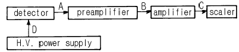
- A
- B
- C
- D
(정답률: 알수없음)
85. 그림과 같이 A방면으로 선원으로 부터 5m 떨어진 곳의 조사선량율은 얼마인가? (단, 선원에서 1m 떨어진 곳에서 0.33R/h.Ci였고, 철판에 의한 γ선 투과율은 0.2라고 한다.)
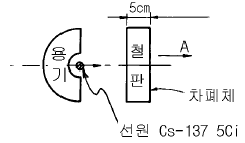
- 1.65R/h
- 0.132R/h
- 0.066R/h
- 1.132R/h
(정답률: 알수없음)
86. 다음 중 알파선에 관한 설명이 아닌 것은?
- 투과성이 베타선이나 감마선보다 약하다.
- 헬륨 원자핵과 동일하다.
- 턴넬효과에 의해 핵으로부터 방출된다.
- 한 방사성물질로부터 방출되는 알파선의 에너지는 연속적인 값을 갖는다.
(정답률: 알수없음)
87. 다음 중 흡수선량을 측정하고자할 때 가장 적당한 검출기는?
- NaI(Tℓ ) detector
- Ge(Li) detector
- Plastic detector
- Air Cavity Ionization chamber
(정답률: 알수없음)
88. FWHM(full width half maximum)이라는 양은 측정기의 어느 특성을 나타내는 양인가?
- 계측 효율
- 에너지 분해능
- 불감시간
- 수명
(정답률: 알수없음)
89. 이온함 계수기에서 Guard ring의 역할을 설명한 것으로 맞지 않는 것은?
- 절연체 간의 전위차를 해소한다.
- 손실전류(leakage current)를 감소시킨다.
- 활성체적(active volume)을 정확히 분할한다.
- 방사선의 종류를 선별한다.
(정답률: 알수없음)
90. 펄스전리함으로 방사선을 검출할 때 알 수 없는 것은?
- 입자의 입사 회수
- 입자의 에너지
- 입자의 종류
- 전리 전류의 시간적 평균치
(정답률: 알수없음)
91. 전치증폭기(Preamp)의 기능으로써 틀린 것은?
- 신호의 정형(Shaping)
- 신호대 잡음비의 최소화
- 임피던스 정합(Matching)
- 검출기에 바이어스전압의 공급
(정답률: 알수없음)
92. 다음 방사선 검출기 중 기체의 이온화를 이용한 검출기가 아닌 것은?
- 비례 계수관
- 열형광 선량계
- G - M 계수관
- 핵분열 계수관
(정답률: 알수없음)
93. 다중파고분석기(MCA)에 어떤 신호가 저장된 채널수가 200개, 내장 진동자의 진동수가 채널당 100㎒, 파고분석기의 신호저장 시간이 5ns이면 이 신호의 불감시간(dead time)은?
- 20⑤ns
- 2⑤ns
- 25ns
- 20ns
(정답률: 알수없음)
94. 82Pb206은 어느 방사선 계열에 속하는 안정 생성물인가?
- Uranium계열
- Thorium계열
- Neptunium계열
- Actinium계열
(정답률: 알수없음)
95. 필름선량계에서 선량(mR)과 흑화도(d)의 값이 그림과 같이 나타났다. 이 필름의 감도는(γ)는 얼마인가?
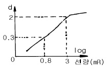
- 1.96
- 0.77
- 10.56
- 1.7
(정답률: 알수없음)
96. 다음 중 α입자를 측정하는 기기는?
- NaI(Tℓ )신틸레이션 계수관
- 4π 비례계수관
- BF3 계수관
- Ge(Li) 계수관
(정답률: 알수없음)
97. 금박(Au thin film)은 다음 중 어느 방사선을 측정하는데 이용되는가?
- γ 선
- 열중성자속
- 속중성자속
- α 선
(정답률: 알수없음)
98. 궤도전자포획과 β+ 방출은 다음 어느 것으로 구별되는가?
- 특성 X선 방출의 유무
- 원자핵의 질량변화 유무
- 원자번호의 변화 유무
- 원자핵 반경의 변화 유무
(정답률: 알수없음)
99. 펄스의 상승시간(rise time) 정의(펄스의 높이를 이용코자할 때)는 아래의 시간구간(Ⅰ, Ⅱ, Ⅲ, Ⅳ)중 어느 것에 해당하는가?
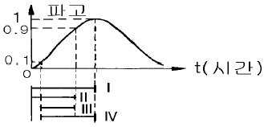
- Ⅰ
- Ⅱ
- Ⅲ
- Ⅳ
(정답률: 알수없음)
100. β-선과 물질과의 상호작용에 대하여 다음 4가지 중 올바른 것은?
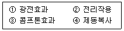
- ① 과 ②
- ① 과 ③
- ② 와 ③
- ② 와 ④
(정답률: 알수없음)